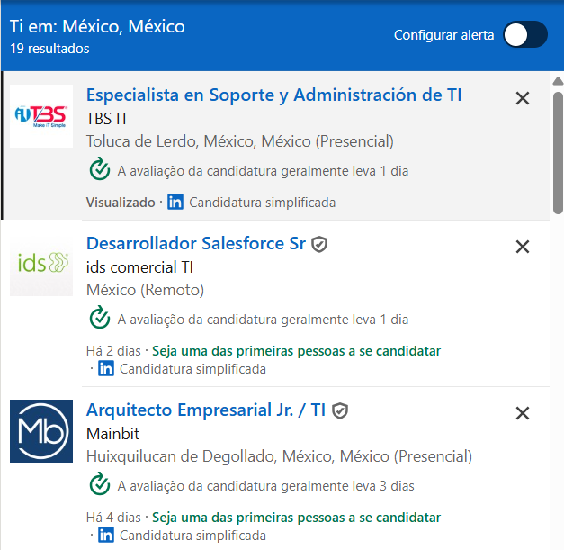

👨💻 Oportunidades de Trabalho em TI no México
O mercado de tecnologia no México está em forte crescimento e oferece diversas oportunidades de emprego para profissionais locais e estrangeiros. A demanda por talentos em TI aumentou com os investimentos em infraestrutura e o avanço digital em várias regiões do país.
🚀 Áreas em Alta
- Desenvolvimento Web e Mobile
- Engenharia de Dados e Machine Learning
- Cloud Computing (AWS, Azure, Google Cloud)
- DevOps e Cibersegurança
- UI/UX Design
- Gestão de Projetos Ágeis
🧭 Plataformas para Buscar Vagas
🔍 Exemplo real de busca no LinkedIn
Veja abaixo um exemplo de busca por vagas de TI no México feito no LinkedIn. Essa imagem mostra como a plataforma apresenta as oportunidades e filtros disponíveis:
👉 Clique aqui para acessar a busca no LinkedIn
🏢 Empresas que Contratam
Além da Amazon, outras empresas e startups estão ativamente contratando profissionais de TI no México:
- Google – Escritório em Querétaro e Cidade do México
- Intel – Contrata desenvolvedores e engenheiros
- Konfio – Startup financeira em rápido crescimento
- Softtek – Empresa mexicana com atuação internacional
- IBM – Presente em diversas cidades
🇧🇷 Dicas para Brasileiros
- Fique atento a oportunidades remotas (muitas aceitam profissionais do Brasil).
- Ter inglês intermediário ou avançado é um diferencial.
- Você pode ser contratado como freelancer (PJ) por meio de plataformas como Deel ou Remote.com.
- Não é necessário visto para processos seletivos — algumas empresas facilitam o processo de migração caso a contratação seja presencial.
🔁 Explore outras seções do site
💼 Investimentos
Empresas que estão impulsionando o setor de TI no México.
🌆 Cidades
Principais polos tecnológicos como Monterrey e Guadalajara.
📬 Contato
Fale conosco e conheça agências e oportunidades remotas.